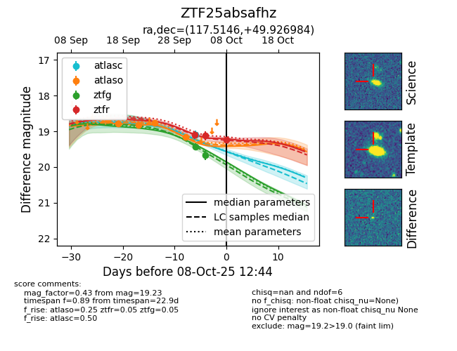
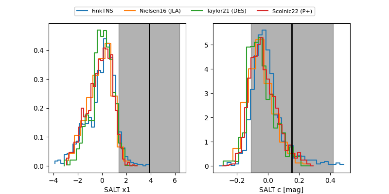

FINK: ZTF25absafhz
Lasair: ZTF25absafhz
ALeRCE: ZTF25absafhz
ZTF25absafhz (ztf,fink)
equatorial (ra, dec) = (117.5146,+49.92698)
galactic (l, b) = (168.6796,+29.59623)


last atlasc=19.09, atlaso=19.16, ztfg=19.66, ztfr=19.23
1 atlasc, 5 atlaso, 2 ztfg, 3 ztfr detections